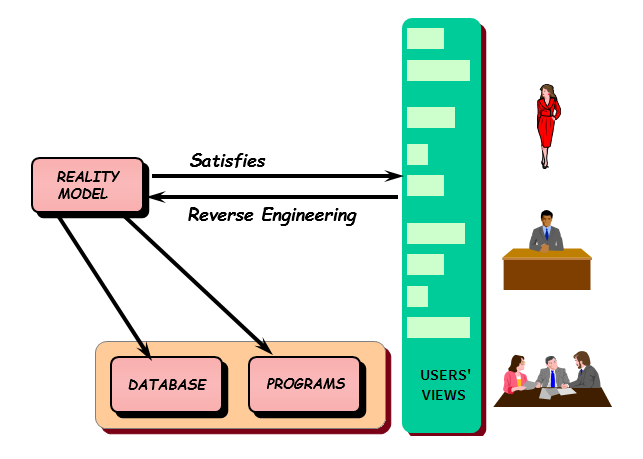

The main task you face in application development is obtaining knowledge about reality to be described. How do you manage to obtain knowledge about reality in a sufficiently objective and thorough way, which will also enable you to build a corporate model? Since users know the objects with which they usually work, they know the information they handle, rules that must be followed, and computations required. Then, those views about their reality are your source of information:  The concept of users’ views refers to the descriptions given by the users who need the application, about their reality and requirements. Every user has one or more views of the data he/she uses daily. Among these views, you have to identify the first group with those used to manage data (with restricted access to add, update, delete and view it). Then, you have to describe them with Transactions, which are the first type of GeneXus objects which must be defined in a Knowledge Base. Based on this model, GeneXus builds the computational support (database and programs) in order to support it. See AlsoTransaction object
|
| Backlinks |
| Knowledge Base |